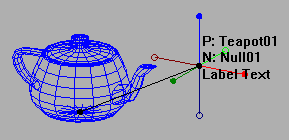
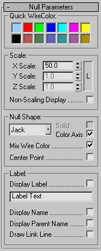

Null Helper
A bit like a (much) enhanced Dummy object, with options including shape, wirecolor, size, and viewport labels, etc.

IMPORTANT:
If you have the jbHelpers.dlo plugin installed, please delete it (otherwise you will get plugin conflicts at startup).
jbHelpers has been superceded by this plugin.
Options:

- Creation Options
While Creating, you can hold the following keys down to get different creation behaviors:
- Shift
- Forces the null to be aligned to the current viewport (Null defaults to world alignement, which is better for character rigs).
- Control
- Lock the size of the null, so you can reposition the null while dragging.
-
This lets you do something like: Click-drag to create a world-aligned null of a certain size. Then, hold Ctrl and single click repeatedly to quickly create a bunch of same-sized nulls.
- Quick Color Group:
Simply lets you set the wireframe color of all the selected Null instances.
- Scale Group:
- L (Lock XYZ)
- Forces the Null object to use only the X Scale, so the object is always uniform in size.
- X, Y, and Z Scale
- The size of the object.
Note this isn't the exact size, as some Null shapes don't always have equal lengths on all three axes (i.e. the Vector or Turtle shapes).
- Non-Scaling Display
- Sets whether the object changes size as you zoom in and out (like most objects), or is displayed as a constant size in the viewport (like lights and cameras).
The meaning of the scale parameters above changes slightly depending on this setting. If it's on, the scale is taken to mean the "percent of the viewport width". So 100 makes the Null size equal the width of the viewport, 50 is half the viewport width, etc.
- Null Shape Group:
- Null Shape
- Select what kind of shape the Null will be. The types are:
- None - Displays as a simple dot. Useful with the Label display (see below).
(Note: if Solid is on, the point will display as a hollow circle when the Z axis is pointing away from you).
- Cross - Useful for pretending that you're using Softimage.
- Jack - Default, similar to the Cross shape, but has "bulbs" that make it easier to see on a grid.
Additionally, the bulbs show which axis is pointing out of the screen.
A solid bulb means the axis pointing "out" of the screen, while a hollow bulb means it is pointing "in".
- Box - A dummy.
- Sphere - A round dummy.
- Vector - A unit vector. Useful for visualizing some things.
- Turtle - A simple shape that's unique on all three axes, so you can see what its orientation is without having to display its local axes.
- Line - A line. Period. Can be a less cluttered version of the Vector when Center Point is on.
- Solid
- Makes the shape display more "solid" and easier to see.
- Color Axis
- Colors the axes of the shape, so that positive XYZ are bright red, green, and blue, and negative XYZ are darker shades.
Only available when the null shape is either Cross or Jack, and Solid is off.
- Mix Wire Color
- If on, the base wireframe color still shows through slightly, even when the Null is selected or frozen. Handy when using the Color Axis option, or when you need to see the Null wireframe color all the time.
- Center Point
- Displays a dot at the centerpoint of the Null (note: the Solid option has the same effect on this as on the None shape type).
- Label Group:
- Display Label
- Toggles the display of the label text in the viewport.
- Label
- A line of text that you can have displayed in the viewport.
- Display Name
- Display the node name in the viewport.
- Display Parent Name
- Display the node's parent's name in the viewport.
- Draw Link Line
- Draw a line from the node to the node's parent.
Back To Top...
Known Bugs/Limitations:
- If you're using Direct3D, turn off "Use Wireframe Faces" in the Direct3D driver setup to avoid display oddities.
Back To Top...
History:
2000.05.15 - Created.
2000.06.06 - Added Non-Scaling Display.
2001.01.01 - Added Shift/Ctrl options while creating.
2001.03.14 - Added Color Axis, bug fix.
2001.03.25 - Added Display Name, Parent Name, and Link Line.
2001.03.29 - Added Mix Wire Color.
2001.03.31 - Added Quick WireColor, ripped out the unfinished jbHelpers crap.
Hopefully I can stop screwing with this plugin for a while :P.
2001.06.29 - Center Point option
"Better" defaults (colored jack shape)
Reversed behaviour of shift key during creation (Null defaults to world alignment now)
Null doesn't crash in D3D mode anymore.
Couldn't select Null in OGL or D3D mode with certain display options on (fixed).
2001.10.09 - Cranked the res on the Sphere shapes
Fixed the creation behaviour so the null size matches the distance you drag (the
size used to be half of what it should have been)
2001.11.07 - Added Line shape type
Changed the way backfacing None/Jack points displayed (used to be small dots,
now uses a hollow circle for clarity)
2007.02.20 - Updating for public 3dsmax9 release.
2008.04.05 - Updated to 64 bit and 3dsmax 2008. Thanks to David Baker for the help.
Back To Top...
Contact / Disclaimer / License:
Bug reports/comments/suggestions: http://www.footools.com/. If you use this software on a project, sending an e-mail/postcard indicating such would be appreciated.
This software is provided 'as-is', without any express or implied warranty. In no
event will the author be held liable for any damages arising from the use of this
software.
Permission is granted to anyone to use this software, subject to the following
restrictions:
1. The origin of this software must NOT be misrepresented; you must not claim that
you wrote the original software.
2. This software may NOT be bundled with any other product or included in any
compilation without the express permission of the author.
3. This notice must NOT be removed or altered from any distribution of this
software.
Back To Top...